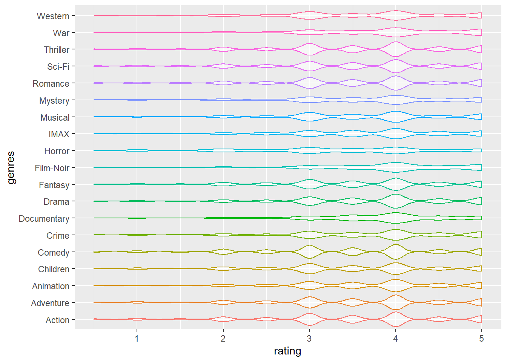
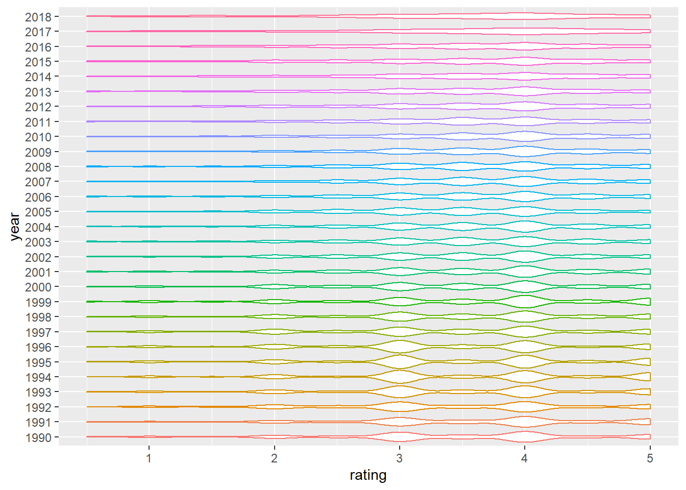
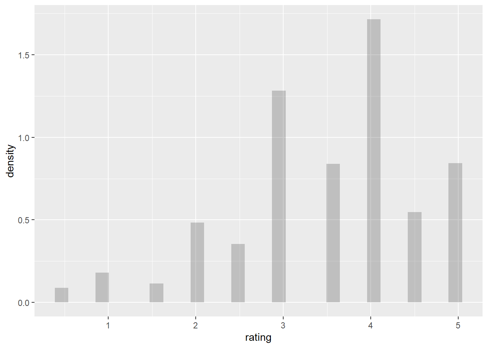

The Dataset source used for EDA analysis is:MoiveLensdataset
MovieLens, a movie recommendation service, provided this dataset (ml-latest-small), which describes rating measured in the 5-star format and free-text tagging activities. It has 100836 ratings and 3683 tags generated by 610 users over 9742 movies between March 29, 1996 and September 24, 2018. This dataset was last updated on September 26, 2018.
Users in the dataset were chosen at random. All users chosen had rated at least 20 films. An id is assigned to each user, and no additional information is supplied.
The dataset was distributed in three files, movies.csv, ratings.csv, and tags.csv.
movieId(movie ID), title(movie title) and genres(movie genres).userId (user ID), movieId (movie ID), rating and timestamp (which represents the timepoint at which the rating was given).userId, movieId, tag (text generated by a user to a movie) and timestamp.
knitr::opts_chunk$set(echo = TRUE)
library(tidyverse)
library(readr)
library(ggplot2)
library(kableExtra)
library(pastecs)
library(ggpubr)
library(tm)
We first imported the dataset “ratings.csv”, and applied janitor::clean_names() to make everything into lower cases. Next, we applied the summary() function to get the summary table. According to the result, for variable rating, the minimum is 0.5, the first quantile is 3, median is 3.5, mean is 3.502, the third quantile is 4 and the maximum is 5. Since userid, movieid, timestamp only represented the ID of users, id of movies and rating generated time, we chose not to analyze those three variables.
data_path = "./data/small/ratings.csv"
summary_df =
read_csv(data_path, col_types = "ccnc") %>%
janitor::clean_names() %>%
summary(summary_df$rating) %>%
knitr::kable() %>%
kable_styling(bootstrap_options = c("striped")) %>%
kableExtra::kable_styling(font_size = 12)
summary_df| user_id | movie_id | rating | timestamp | |
|---|---|---|---|---|
| Length:100836 | Length:100836 | Min. :0.500 | Length:100836 | |
| Class :character | Class :character | 1st Qu.:3.000 | Class :character | |
| Mode :character | Mode :character | Median :3.500 | Mode :character | |
| NA | NA | Mean :3.502 | NA | |
| NA | NA | 3rd Qu.:4.000 | NA | |
| NA | NA | Max. :5.000 | NA |
We imported the dataset “movies.csv”, and applied janitor::clean_names() to made everything into lower cases. We also applied separate() function to separate the year of the variable “title”. Next, we count the genres by count() function. We also applied the filter() function to keep the n number lager than 1500.
data_path = "./data/small/movies.csv"
movie_descriptive =
read_csv("./data/small/movies.csv") %>%
janitor::clean_names() %>%
separate(
title, c("name", "year"), sep="\\s+(?=\\S*$)") %>%
separate_rows(genres, sep = "[|]")
genres_count =
movie_descriptive %>%
group_by(genres) %>%
count(genres) %>%
filter(n >= 1500) %>%
arrange(desc(n)) %>%
knitr::kable() %>%
kable_styling(bootstrap_options = c("striped")) %>%
kableExtra::kable_styling(font_size = 12)
genres_count| genres | n |
|---|---|
| Drama | 4361 |
| Comedy | 3756 |
| Thriller | 1894 |
| Action | 1828 |
| Romance | 1596 |
Next, we also counted the 5 most appeared release year of movies, i.e. the 5 most prolific year for movie industry.
year_count =
movie_descriptive %>%
group_by(year) %>%
count(year) %>%
filter(n >= 690) %>%
arrange(desc(n)) %>%
knitr::kable() %>%
kable_styling(bootstrap_options = c("striped")) %>%
kableExtra::kable_styling(font_size = 12)
year_count| year | n |
|---|---|
|
|
733 |
|
|
719 |
|
|
709 |
|
|
705 |
|
|
691 |
Data cleaning was performed for EDA. For dataset “rating.csv”, we applied the janitor::clean_names() function to make sure that everything is in lower case, and we also excluded the timestamp variable that did not related to our analysis assumption. After this step, we set up a new data frame called “rating_tidy”. Next up, we also created a new dataframe called “high_rating”, which only contains the highest rating score “5” of the “rating_tidy” dataframe. Last but not least, we renamed the variable “movieId” to movie_id for the “movie.csv” dataset and transfered it to a new data frame called “movie_names”. Other trivial data cleaning process were mentioned in the following EDA section.
data_path = "./data/small/ratings.csv"
rating_tidy =
read_csv(data_path, col_types = "ccnc") %>%
janitor::clean_names() %>%
select(-timestamp) %>%
mutate(rating = as.double(rating))
high_rating =
rating_tidy %>%
filter(rating == 5.0)
movie_names =
read_csv("./data/small/movies.csv") %>%
rename(movie_id = movieId)Find popular movies and high-rating movies : To find the top 5 popular movies with the highest ratings, we filtered movies with ratings less than 5 and counted the 5 most highly rated movies. The Shawshank Redemption (1994) is the most popular movie, which has been rated by 153 different users. No.2 Pulp Fiction (1994) has been rated by 123 other users. Forrest Gump (1994) has been rated by 116 users and thus won the 3rd popular movie. The Matrix (1999) had 109 user ratings and became No.4. No. 5 was Star Wars: Episode IV - A New Hope (1977), and it has been rated by 104 users. We also found out that among those 5 most frequently rated movies and the highest rating movies, genres with tag drama appeared most frequent (3 times, and appeared in Forrest Gump (1994), Pulp Fiction (1994), The Shawshank Redemption (1994)). One interesting fact was that among the 5 most popular movies and 5 highest rating movies, 3 movies were released in 1994 and 4 were released in the 90s.
Key steps : We first merged the “high_rating” and “movie_names” dataframes, and counted the “movie_id” variable and filtered movies with over 100 ratings. Next, we re-arranged rows according to the count and separated release year of movies from title as year. One interesting fact we found is that among the 5 most popular movies and 5 highest rating movies, 3 movies were released in 1994; 4 movies were released in the 90s.
data_path = "./data/small/ratings.csv"
rating_tidy =
read_csv(data_path, col_types = "ccnc") %>%
janitor::clean_names() %>%
select(-timestamp) %>%
mutate(rating = as.double(rating))
high_rating =
rating_tidy %>%
filter(rating == 5.0)
movie_names =
read_csv("./data/small/movies.csv") %>%
rename(movie_id = movieId)
high_rating_movienames =
merge(high_rating, movie_names) %>%
group_by(title, genres,rating) %>%
count(movie_id) %>%
filter(n >= 100) %>%
select(n,title,genres,rating) %>%
ungroup(title, genres,rating) %>%
arrange(desc(n)) %>%
separate(
title, c("name", "year"), sep="\\s+(?=\\S*$)") %>%
knitr::kable() %>%
kable_styling(bootstrap_options = c("striped")) %>%
kableExtra::kable_styling(font_size = 12)
high_rating_movienames | n | name | year | genres | rating |
|---|---|---|---|---|
| 153 | Shawshank Redemption, The |
|
Crime|Drama | 5 |
| 123 | Pulp Fiction |
|
Comedy|Crime|Drama|Thriller | 5 |
| 116 | Forrest Gump |
|
Comedy|Drama|Romance|War | 5 |
| 109 | Matrix, The |
|
Action|Sci-Fi|Thriller | 5 |
| 104 | Star Wars: Episode IV - A New Hope |
|
Action|Adventure|Sci-Fi | 5 |
Find the average rating of each genres in different year: In 1902, the average ratings for genres Action, Adventure, Fantasy, Sci-Fi were all 3.5. In 1903, the average ratings for genres Crime and Western were both 2.5. The averages for genres Animation, Comedy, Sci-Fi in 1908 were all 4.0. The genre Drama’s average ratings in 1915 was 2.0.
Key steps : As to find out the average rating of each genres in different year, we used separate() to separate the combined genre. Then, we found the average rating in different genres by using group_by() and summarize(). Here we only display the first ten rows of this dataframe:
movie_names_ave =
read_csv("./data/small/movies.csv") %>%
rename(movie_id = movieId) %>%
separate(
title, c("name", "year"), sep="\\s+(?=\\S*$)") %>%
separate_rows(genres, sep = "[|]") %>%
filter(!genres %in% "(no genres listed)")
filter_ratingscore =
rating_tidy
ave_rating =
merge(filter_ratingscore, movie_names_ave) %>%
group_by(year,genres) %>%
summarize(mu_rating = mean(rating)) %>%
head(10) %>%
knitr::kable() %>%
kable_styling(bootstrap_options = c("striped")) %>%
kableExtra::kable_styling(font_size = 12)
ave_rating| year | genres | mu_rating |
|---|---|---|
|
|
Action | 3.5 |
|
|
Adventure | 3.5 |
|
|
Fantasy | 3.5 |
|
|
Sci-Fi | 3.5 |
|
|
Crime | 2.5 |
|
|
Western | 2.5 |
|
|
Animation | 4.0 |
|
|
Comedy | 4.0 |
|
|
Sci-Fi | 4.0 |
|
|
Drama | 2.0 |
The violin plot regarding ratings and genres shows: Based on the violin plot, we can read that the ratings are generally ranged from 2.5 to 4.5. Ratings 3 and 4 are the most common values in all of the genres. Some genres, for example, Action and Adventure, have more times rating values 4 than 3.
Key steps : After completing data cleaning process mentioned in previous sections, we merged the two dataframes, filter_ratingscore and movie_names, cleaned all column names into lower cases, extracted genres. Finally, we created a violin plot regarding ratings and genres. The plot showed that there is no obvious difference in ratings distributions among different genres.
movie_names =
read_csv("./data/small/movies.csv") %>%
rename(movie_id = movieId) %>%
separate(
title, c("name", "year"), sep="\\s+(?=\\S*$)")
filter_ratingscore =
rating_tidy
violin_df =
merge(filter_ratingscore, movie_names) %>%
janitor::clean_names() %>%
separate_rows(genres, sep = "[|]") %>%
filter(!genres %in% "(no genres listed)") %>%
ggplot(aes(x = rating, y = genres)) + geom_violin(aes(color = genres, alpha = .5)) +
theme(legend.position="none")
viridis::scale_color_viridis(discrete = TRUE)
violin_df
The violin plot regarding ratings and year shows: From 1990 to 2018, the average rating score of movies has become more and more “similar”. That is, the rating values of modern movies are more frequently concentrated between 3.5 and 4, and the density of corresponding scores is close. However, compared to the modern movies from 2000, the user preference for movies from the 90s is more divided, and the density between different ratings is more obvious.
Key steps : After completing data cleaning process mentioned in previous sections, we removed brackets in year, and only included movies released between 1990 and 2018. We made a violin plot to show the rating distributions among movie release years.
movie_names =
read_csv("./data/small/movies.csv") %>%
rename(movie_id = movieId) %>%
separate(
title, c("name", "year"), sep="\\s+(?=\\S*$)")
selected_years = 1990:2018
violin_df2 =
merge(filter_ratingscore, movie_names) %>%
mutate(
year = removePunctuation(year)
) %>%
filter(year %in% selected_years) %>%
ggplot(aes(x = rating, y = year)) +
geom_violin(aes(color = year))+
theme(legend.position="none")
viridis::scale_fill_viridis(discrete = TRUE)
violin_df2 
ggplot(filter_ratingscore, aes(x = rating, y = ..density..)) +
geom_histogram(alpha = 0.3, bins = 30) 
Assumption
\(H_0:\mu_{0}=\mu_1=\mu_2=\mu_3=...=\mu _x\)
\(H_1: \text{At least two of the mean ratings of the users are different}\)
kruskal.test(rating ~ user_id, data = filter_ratingscore) %>%
broom::tidy() %>%
kableExtra::kbl() %>%
kable_styling(bootstrap_options = c("striped")) %>%
kableExtra::kable_styling(font_size = 12)| statistic | p.value | parameter | method |
|---|---|---|---|
| 20676.72 | 0 | 609 | Kruskal-Wallis rank sum test |
Notice: The p values here was less than 0.05 and was too small to be shown in r. Thus,the p value shown in table here was 0.